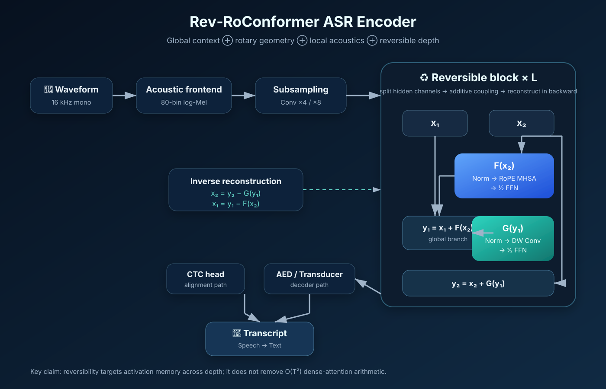

Rev‑RoConformer: масштабирование глубины Rotary-Conformer с эффективной памятью для ASR
1. Введение
ASR должен моделировать речь на разных временных масштабах. Локальные спектральные и фонетические закономерности существуют на десятках и сотнях миллисекунд, тогда как лексические, синтаксические и дискурсивные связи могут быть значительно длиннее. Conformer объединил Transformer-подобное self-attention и свёрточные модули в одном речевом энкодере [1].
При увеличении глубины возникают две разные проблемы. Первая — длина последовательности: плотное attention вычисляет отношения между \(T\) запросами и \(T\) ключами, поэтому арифметика близка к \(O(T^2d)\). Вторая — память по глубине: стандартный backpropagation сохраняет промежуточные активации многих слоёв, и память растёт примерно линейно с \(L\). Эти ограничения взаимодействуют на практике, но математически различны.
Основной вопрос. Можно ли сохранить в ASR-Conformer глобальное внимание RoPE и локальную свёртку, одновременно применив обратимое аддитивное сопряжение для уменьшения памяти обучения при росте глубины без неприемлемой потери качества распознавания, численной устойчивости или пропускной способности?
2. Исследовательский пробел и предшествующие работы
2.1 RoPE-Conformer ASR уже существует
Conformer предложен Gulati и соавторами [1]. Li, Xu и Zhang в 2021 году исследовали RoPE непосредственно в Conformer для end-to-end ASR и показали результаты на AISHELL-1 и LibriSpeech [5]. В 2025 году RoPE был дополнительно систематически протестирован для ASR [12]. Следовательно, «RoPE + Conformer + ASR» не является новизной данного проекта.
2.2 Обратимые Transformer-блоки также являются prior art
RevNet ввёл классическое аддитивное сопряжение [2], а Reformer применил обратимые residual layers к Transformer [3]. Базовая идея восстановления активаций уже известна.
2.3 RoPE и reversibility уже встречались в речевых моделях
LinearSpeech использовал RoPE и обратимые residual blocks в text-to-speech архитектуре [6]. Поэтому нельзя утверждать, что такое сочетание никогда не применялось в speech.
2.4 Существует обратимый Conformer для speech-to-speech translation
Работа Wu Duplex Diffusion Models Improve Speech-to-Speech Translation (ACL Findings 2023) описывает reversible duplex Conformer с явными обратными формулами для FFN, MHSA и CNN [10]. В ней используется relative positional embedding, а задача — двунаправленный перевод речь-в-речь, а не ASR depth-memory scaling. Это наиболее близкая структурная работа. Rev‑RoConformer не заявляет изобретение самого обратимого Conformer.
2.5 Большая глубина Conformer сама по себе не нова
Deep Sparse Conformer изучал энкодеры вплоть до примерно ста слоёв [8]. Поэтому 96–100 слоёв не являются самостоятельным novelty claim.
3. Архитектура

3.1 Акустический фронтенд
Базовая конфигурация: mono 16 kHz, 80-bin log-Mel, окно 25 ms, шаг 10 ms, convolutional subsampling ×4. Вариант ×8 рассматривается отдельно, потому что длина \(T\) напрямую влияет на стоимость attention.
\[X_0\in\mathbb{R}^{B\times T\times d}.\]3.2 Обратимое аддитивное сопряжение
\[X=[x_1;x_2],\qquad x_1,x_2\in\mathbb{R}^{B\times T\times d/2}.\]Прямой проход:
\[y_1=x_1+F_\ell(x_2),\qquad y_2=x_2+G_\ell(y_1).\]Возможная декомпозиция:
\[F_\ell(z)=\mathrm{FFN}_{1/2}(z)+\mathrm{RoPEMHSA}(z),\]\[G_\ell(z)=\mathrm{ConvModule}(z)+\mathrm{FFN}_{1/2}(z).\]Восстановление:
\[x_2=y_2-G_\ell(y_1),\qquad x_1=y_1-F_\ell(x_2).\]Следовательно,
\[R_\ell^{-1}(R_\ell(X))=X.\]3.3 RoPE
\[R(t\theta)=\begin{bmatrix}\cos(t\theta)&-\sin(t\theta)\\\sin(t\theta)&\cos(t\theta)\end{bmatrix},\qquad Q'_t=R(t\Theta)Q_t,\quad K'_t=R(t\Theta)K_t.\]Глобальное attention:
\[\mathrm{softmax}\left(\frac{Q'K'^T}{\sqrt{d_h}}\right)V.\]Обозначение \(e^{it\Theta}\) — компактная комплексная запись попарных двумерных вращений.
4. Теоретическая эффективность
Предложение 1. Память активаций по глубине
Предложение 2. RoPE сохраняет евклидову норму
Предложение 3. Reversible depth не устраняет квадратичное attention
5. Статус утверждений об «оптимизации»
Depth activation memory
Идеальное обратимое сопряжение удаляет линейный по \(L\) retained-state term.
RoPE в ASR
Уже исследовано [5,12].
WER
Требует реального benchmark.
Wall-clock speed
Recomputation может замедлить обучение.
Inference-memory advantage
Основной эффект относится к training backward.
Linear global attention
Dense attention остаётся квадратичным.
6. Экспериментальный протокол
| ID | Encoder | Position | Memory strategy |
|---|---|---|---|
| B0 | Conformer | RelPos | Standard |
| B1 | Conformer | RoPE | Standard |
| B2 | Rev-Conformer | RelPos | Reversible |
| P | Rev‑RoConformer | RoPE | Reversible |
| C1 | RoPE-Conformer | RoPE | Gradient checkpointing |
Требуются режимы iso-model, iso-memory и iso-compute. Checkpointing обязателен как прямой конкурент, также обменивающий дополнительные вычисления на память.
Рекомендуемый sweep: \(L\in\{12,24,48,72,96\}\). Сначала synthetic/unit tests для inverse reconstruction, gradient equivalence и RNG/dropout, затем LibriSpeech train-clean-100 и LibriSpeech 960h. Для межъязыковой проверки возможны AISHELL-1, Common Voice или VoxPopuli.
Метрики: WER/CER, peak GPU memory, samples/s, audio-seconds/s, GPU-hours до целевого validation WER, максимальная стабильная глубина и ошибка восстановления
\[E_{rec}^{(\ell)}=\frac{\|X_\ell-\hat X_\ell\|_2}{\|X_\ell\|_2+\epsilon}.\]7. Проверяемые гипотезы
H1: при одинаковой архитектуре peak training memory у Rev‑RoConformer ниже, чем у обычного RoPE-Conformer.
H2: при сопоставимом model/compute budget качество распознавания остаётся конкурентоспособным.
H3: в одинаковом VRAM-бюджете экономия памяти позволяет использовать больший полезный batch или depth.
H4: реконструкция и градиенты остаются численно устойчивыми в FP32/BF16 на полезных глубинах.
H5: reversible depth и FlashAttention-подобные exact kernels могут быть комплементарными.
8. Что можно ожидать от производительности
Структура даёт теоретическое основание ожидать улучшение памяти активаций по глубине, но не доказывает лучший WER или более быстрый wall-clock. Наиболее реалистичный положительный сценарий: дополнительное backward-вычисление освобождает VRAM, который затем используется для большего batch, более длинных training segments, ширины или глубины. Конечная польза для STT должна быть измерена.
Для очень длинной речи глобальное attention снова становится доминирующим при росте \(T\). Практическая long-form система, вероятно, должна сочетать reversible depth с downsampling, FlashAttention, streaming/chunking или sparse/local attention, но эти факторы следует аблировать отдельно.
9. Воспроизводимость
Референсная реализация планируется на PyTorch. Для каждого headline result должны публиковаться конфигурации, seeds, версии ПО и оборудования, decoding settings, метод измерения памяти, сырые логи и точный Git commit. Unit tests обязаны проверять inverse reconstruction, gradient equivalence, RoPE reference equivalence, mixed precision и deep-chain stability. До реальных запусков таблицы результатов остаются TBD.
10. Ограничения
Открытый поиск литературы не равен полной систематической проверке всех подписных баз; floating-point нарушает точную инверсию реальной арифметики; recomputation может ухудшить скорость; dense attention остаётся квадратичным; большая глубина не гарантирует лучшего ASR.
11. Заключение
Rev‑RoConformer — не заявление о «совершенном STT», а проверяемый вопрос масштабирования:
\[\boxed{T^2\oplus e^{it\Theta}\oplus\mathcal C_{local}\oplus R^{-1}R=I}.\]Математически защищаемый результат относится к depth-dependent activation storage. Открытый эмпирический вопрос — улучшит ли это WER–memory–compute Pareto frontier по сравнению с обычным и checkpointed RoPE-Conformer.
Литература
[1] Gulati et al., Conformer, 2020. arXiv.
[2] Gomez et al., RevNet, 2017. arXiv.
[3] Kitaev et al., Reformer, 2020. arXiv.
[4] Su et al., RoFormer, 2021. arXiv.
[5] Li et al., RoPE-Conformer ASR, 2021. arXiv.
[6] Zhang et al., LinearSpeech, 2021. ISCA.
[8] Wu, Deep Sparse Conformer, 2022. arXiv.
[9] Dao et al., FlashAttention, 2022. arXiv.
[10] Wu, Duplex Diffusion Models, ACL 2023. ACL Anthology.
[11] Yao et al., Zipformer, ICLR 2024. arXiv.
[12] Zhang et al., Benchmarking RoPE for ASR, 2025. arXiv.
Примечание по научной добросовестности: препринт не содержит вымышленных WER, latency, throughput, VRAM или energy measurements. Дата отсечения публичного поиска: 25.07.2026.